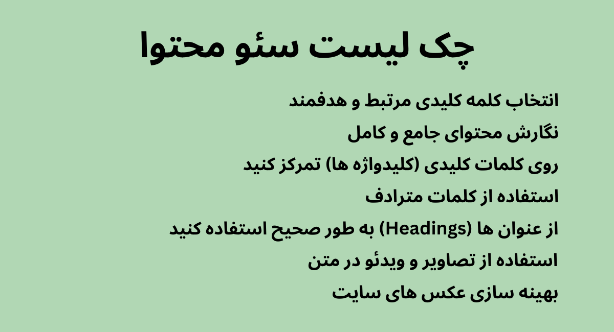

تولید محتوا، به مشارکت در اهدای اطلاعات به هر رسانه ای و به ویژه رسانههای دیجیتال گفته میشود. اطلاعات اهدایی مذکور برای یک کاربر نهایی در زمینههای خاص است. محتوا «چیزی است که باید از طریق یک مدیوم بعنوان گفتار، نوشتار یا هر یک از هنرهای گوناگون بیان شود» محتوا برای بیان خود، توزیع، بازاریابی و انتشار میباشد. فرمهای معمول ایجاد محتوا شامل نگهداری و به روز رسانی وب سایتها، وبلاگ نویسی، عکاسی، فیلمبرداری، تحلیل برخط، نگهداری حسابهای رسانههای اجتماعی و ویرایش و توزیع رسانههای دیجیتال است. مرکز تحقیقات پیو، تولید محتوا را «تولید متریال اهدایی مردم به جهان برخط» توصیف کردهاست.
محتوای متنی محتوای صوتی محتوای تصویری محتوای ویدئویی
با ظهور پدیده ای مانند اینترنت و شبکه های اجتماعی تولید محتوا به یکی از مهمترین مفاهیم عصر مدرن تبدیل شد. محتوا دقیقا همان چیزی است که صفحات خالی فضای مجازی را پر کرد. امروزه محتوا می تواند اشکال مختلفی داشته باشد مثل پست وبلاگ، ویدئو، کتاب الکترونیکی، توییت، اینفوگرافیک، تبلیغات. و پس از مدتی انسان مدرن به این نتیجه رسید که هر چه اندیشه ی عامل تولید محتوا قدرتمند تر باشد، محتوای موفق تری ارائه خواهد داد. از همان ابتدای رونق رسانه هایی همچون روزنامه و مجله نام های تجاری محتوای سفارشی به این رسانه ها می سپردند. مگر محتوا چه ویژگی منحصر به فردی دارد؟ ویژگی منحصر به فرد محتوا این است که مخاطب دارد و از طریق مخاطب شما می توانید صدای خود را به طیف گسترده ای از مردم برسانید. پس محتوا وسیله ای برای انتقال غیر مستقیم اطلاعاتی همچون معرفی نام تجاری شماست.
تولید محتوا باکیفیت و خوب به جذب مخاطب کمک میکند و تلاش میکند کاربران را برای مدت طولانیتری در سایت یا شبکه اجتماعی شما نگه دارد. اگر صاحب یک کسبوکار آنلاین هستید، با تولید محتوای آنلاین میتوانید میلیونها کاربر اینترنتی را به مشتریان بالقوه تبدیل کنید تا به خرید محصولات شما ترغیب شود. اگر هم یک وبسایت خبری دارید، میتوانید با محتوای جذاب کاری کنید که مخاطبان به کاربران دائمی شما تبدیل شوند و از تبلیغات درآمدزایی کنید. تولید محتوا در اینترنت میتواند باعث شناخت کاربران با برند شما شود و اعتمادی را بین شما و آنها ایجاد کند. البته تمام اینها فقط به شرطی امکانپذیر است که برای تولید محتوای خود استراتژی چیده باشید. شما باید برای انتشار محتوای خود برنامهریزی داشته باشید تا بتوانید کاری کنید که مخاطبان دائماً به سایت یا پیج شبکه اجتماعی شما سر بزنند و محتواهای دیگرتان را هم مطالعه کنند
هدفگذاری,شناخت مخاطبان, تعیین استراتژی محتوا,شناسایی سایتهای رقیب,انتخاب موضوع برای تولید محتوا,انتخاب عناوین جذاب,ساخت تقویم محتوایی, طراحی محتوا,سئو کردن محتوا
محتوا تولید میشود تا توسط موتور جستجوی گوگل به نمایش درآید و کاربران از طریق آن وارد سایت شما شوند. بنابراین باید در فرآیند و مراحل تهیه محتوا حتماً سئو کردن آن را در نظر بگیرید. یک محتوا دارای بخشهای مختلفی است که باید به بهترین شکل بهینه شوند. متا تگ : یکی از اصلیترین و مهمترین بخش مطلب برای نمایش در جستجوگر گوگل است. این همان بخش توضیحاتی است که در زیر عنوان نتایج جستجوی گوگل میتوان دید. این بخش شاید تأثیر مستقیمی روی سئو سایت نداشته باشد، ولی به شدت روی جذب مخاطب تأثیرگذار است. تگهای هدینگ (H) : ارزش بسیار زیادی برای سئو سایت دارند. این تگها از H1 تا H6 را شامل میشوند و هر چه عدد جلوی H بیشتر شود، ارزش آن کاسته میشود. معمولاً تگ H1 عنوان اصلی محتوا است و سایر تگها مربوط به تیترهای وسط محتوا هستند. لینکسازی داخلی : کاربر را به دیگر محتوای سایت شما متصل میکند و برای یک محتوای سئو شده اهمیت زیادی دارد. لینکسازی باعث میشود کاربر بیشتر در سایت شما بماند. بهینهسازی تصاویر : بخش دیگری از فرآیند سئو محتوا در سایت است. یک تصویر بهینه باید از حجم کم و نام مرتبط با محتوا برخوردار باشد و یک متن جایگزین (Alt) مناسب داشته باشد.
شما برای تولید محتوای خود فارغ از نوع آن، موضوعی را انتخاب کنید که نیازی از یک قشر کاربران را تأمین کند. اگر موضوعی که انتخاب میکنید خیلی مورد نیاز کاربران نباشد، نباید انتظار داشته باشید که افراد زیادی هم از آن بازدید کنند. بنابراین باید موضوعاتی را انتخاب کنید که در هر حوزهای که مد نظرتان است، بالاترین درخواست را داشته باشند. یکی از راههای انتخاب موضوع، تحقیق درباره کلمات کلیدی است. به طور مثال اگر در حوزه «فناوری» فعالیت میکنید، برای تولید محتوا در سایت باید نیازهای کاربران این حوزه را بسنجید. مثلاً اگر نیاز روز جامعه انتخاب «بهترین اپلیکیشن پیام رسان» است، شما باید با توجه به این کلیدواژه محتوایتان را بنا کنید و پیام رسانهایی که میتوانند بهترین امکانات را در اختیار کاربران قرار دهند، به آنها معرفی کنید. توصیه میکنیم فهرستی از کلمات کلیدی تهیه کنید و متناسب با آنها محتوای خود را تولید کنید. برای انتخاب بهترین کلیدواژهها میتوانید از گوگل و سایتهای رقیب کمک بگیرید
محتواهای ویدیویی به خاطر راحتی استفاده، در دسترس بودن و راحتتر ارتباط برقرار کردن با کاربر، این روزها محبوبیت زیادی به دست آوردهاند. البته که در مقایسه با تولید محتوای متنی که حتی با یک گوشی هوشمند ارزان قیمت هم امکان پذیر است، تولید محتوای ویدیویی برای شروع هزینه زیادی را روی دست شما میگذارد. بسیاری از تولیدکنندگان محتوا برای شبکههای اجتماعی مثل اینستاگرام تولید محتوای ویدیویی میکنند و از طریق تبلیغات یا مباحث آموزشی کسب درآمد میکنند. اما در این بین برخی دیگر نیز پلتفرمهای ویدیویی مثل آپارات و یوتیوب را برای تولید محتوا انتخاب میکنند که اگر سطح ویدیوی تولیدی بالا باشد، میتواند منجر به درآمدزایی خوبی هم شود. به طور مثال کاربران از طریق تبلیغات پیش پخش آپارات که پیش از پخش محتوای ویدیویی آنها به نمایش درمیآید، درآمدزایی میکنند
در این مقاله بررسی کردیم که تولید محتوا چیست و با فرآیند و مراحل تولید محتوا آشنا شدیم، بهترین ابزارهای تولید محتوا را معرفی کردیم و فهمیدیم که سئو محتوا چیست و چه قوانینی دارد تا بتواند در جستجوهای گوگل رتبه بالایی را کسب کند. بخاطر داشته باشید که تولید محتوا مهمترین بخش بازاریابی دیجیتال است و از آنجا که کسبوکارهای کوچک و بزرگ، یک به یک در حال گرایش پیدا کردن به این حوزه هستند، شما باید به اصولیترین روش آن را آموزش ببینید تا بتوانید محتوایی تأثیرگذار تولید کنید و در رقابت با هزاران محتوایی که روزانه در فضای مجازی منتشر میشود، کسبوکارتان را رونق ببخشید.